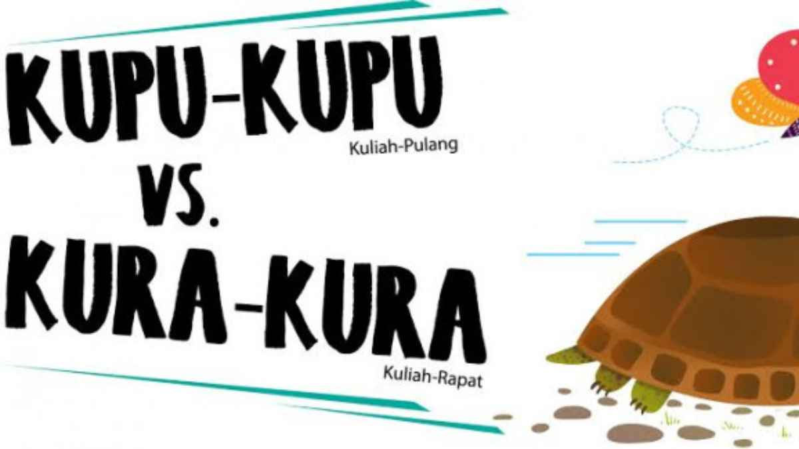

Kuliah-Pulang vs Kuliah-Rapat: Kenapa Mahasiswa Wajib Berorganisasi?
Oleh: Bung Hannan | 28 Juli 2025
Ada dua tipe mahasiswa paling umum di kampus: si 'kupu-kupu' (kuliah-pulang, kuliah-pulang) dan si 'kura-kura' (kuliah-rapat, kuliah-rapat). Si kupu-kupu mungkin punya IPK cumlaude, tapi seringkali kaget pas masuk dunia kerja. Si kura-kura mungkin IPK-nya nggak setinggi langit, tapi entah kenapa lebih luwes dan banyak akal. Kenapa bisa gitu?
Jawabannya simpel: kampus itu laboratorium, bukan cuma pabrik ijazah. Ruang kelas ngajarin kita teori, tapi organisasi ngajarin kita prakteknya. Mau belajar public speaking? Jadi moderator diskusi. Mau belajar leadership? Jadi ketua pelaksana acara. Mau belajar manajemen konflik? Coba aja atur rapat dengan puluhan kepala yang beda-beda. Semua itu 'soft skill' yang harganya mahal banget di dunia pasca-kampus.
Belum lagi soal relasi. Di organisasi, kita ketemu orang dari berbagai jurusan, angkatan, bahkan latar belakang. Inilah 'networking' yang sesungguhnya. Koneksi ini bukan cuma buat nambah follower IG, tapi buat buka pintu kesempatan di masa depan, entah itu proyek bareng, info kerja, atau sekadar teman diskusi yang sefrekuensi.
"Organisasi itu tempat kita belajar mengubah keadaan, bukan cuma ngeluhin keadaan."
Yang paling penting, organisasi (apalagi organisasi pergerakan seperti GMNI) ngajarin kita buat peduli. Kita jadi melek sama isu-isu sosial, belajar menganalisis masalah, dan berani menyuarakan solusi. Kita belajar bahwa jadi mahasiswa itu punya tanggung jawab lebih dari sekadar ngejar nilai. Jadi, kalau kamu masih jadi 'kupu-kupu', mungkin ini saatnya coba jadi 'kura-kura'. Gak akan rugi, malah nambah 'cuan' pengalaman yang gak ternilai.